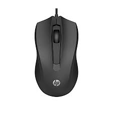

Imagini de continut
Poartă o încărcătură semantică, se referă la conținutul paginii și
contribuie la comunicarea unor informații utile pentru utilizator.
Ele sunt adăugate în marcajul HTML prin tag-ul cu atributul
obligatoriu alt care descrie imaginea.
